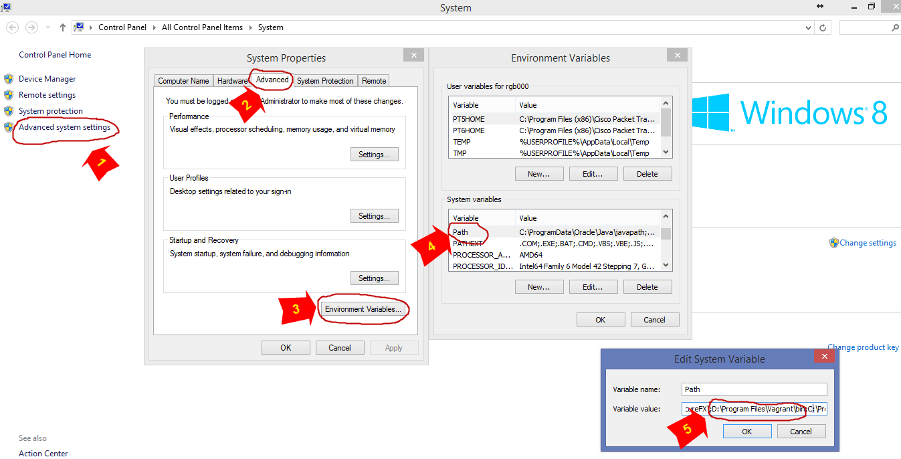

Vagrant_настройки
https://webhamster.ru/mytetrashare/index/mtb0/1443950130cgfuj874ir
Конфигурация:
# -*- mode: ruby -*-
# vi: set ft=ruby :
Vagrant.configure(2) do |config|
config.vm.box = "lgromb/androidx86-kk"
config.ssh.username = "root"
config.ssh.password = "vagrant"
config.vm.network "private_network", ip: "192.168.101.101", auto_config: false
config.vm.network "forwarded_port", guest: 5555, host: 5051
config.vm.synced_folder ".", "/vagrant", disabled: true
config.vm.provider "virtualbox" do |vb|
vb.name = "ax86-kk"
vb.gui = true
vb.memory = 1024
end
============================================
#sudo vagrant ssh-config
Host default
HostName 127.0.0.1
User vagrant
Port 2222
UserKnownHostsFile /dev/null
StrictHostKeyChecking no
PasswordAuthentication no
IdentityFile /home/alensav/.vagrant.d/insecure_private_key
IdentitiesOnly yes
LogLevel FATAL
===========
Vagrant. Установка и первый запуск
В большинстве предыдущих статье писалось о установке и настройке различных сервисов под Linux дистрибутивами. Шла речь о выделенных серверах и физических площадках, но когда нужно проводить тестирование того или иного сервиса, кластера, технологии и т.п. – нужно использовать виртуализацию. Зачастую, пользователи Windows используют VirtualBox, VMware и чтобы развернуть новую Linux площадку нужно:
Все эти действия поначалу и я делал руками. И это занимало очень много времени. К примеру, для настройки mysql кластера из 6-ти машин нужно было создать 6 клонов (пункт 3), зайти в каждый из них и настроить статический IP (все писать вручную, так как буфер не работает), поменять хостнейм, обновить hosts-файл и т.п.
В данной статье я хочу написать о такой полезной штуке, как Vagrant и о том, как она мне помогла автоматизировать процесс создания тестовой площадки любых масштабов.
Пролог
В роли хостовой машины у нас выступает Windows 8.1.
В роли эмулятора виртуальных машин – VirtualBox.
В роли гостевой ОС – Ubuntu 12.04.
Vagrant – это утилита, которая позволяет создать, поднять и настроить виртуальную площадку любых размеров в течении нескольких минут. Она работает с такими известными провайдерами (эмуляторами) как VirtualBox, VMware, AWC и имеет поддержку custom-ных провайдеров.
Для работы с VirtualBox виртуальными машинами vagrant использует VBoxManage. Это интерфейс командной строки, который позволяет полностью контролировать Vbox из консоли (детали и список всех опций и действий можно почитать здесь ).
1. Установка
Для начала установим vagrant под Windows 8.1. Все что нужно сделать, это перейти на сайт, скачать последний бинарник под Windows и установить.
Установка стандартная, только нужно жать Далее.
После установки, нужно проверить или vagrant попал в переменную пути (Path), чтобы нам не пришлось полностью прописывать путь. Для этого, правой кнопкой мишки на Мой компьютер —> Свойства и выбираем Дополнительные параметры системы. Там есть пункт Дополнительно, где нужно выбрать Переменные среды. И находим переменную Path, где должна быть строка с путем к Vagrant bin. Смотрите картинку ниже (у меня интерфейс на английском, так что смотрите по расположению вкладок и кнопок).

Переменная есть, теперь можно проверить работоспособность.
2. Первый запуск
Для vagrant удобно использовать powershell – запускаем. Теперь создаем папку в которой будем инициализировать окружение и побырику поднимем дефолтный образ Ubuntu 12.04 (система сама скачает нужный образ из готового репозитория).
|
2 3 4 5 6 7 8 9 10 11 12 13 14 15 16 17 18 19 20 21 22 23 24 25 26 27 28 29 30 31 32 33 34 35 36 37 38 39 40 41 42 43 44 45 46 47 48 49 50 51 52 53 54 55 56 57 58 59 60 61 62 63 64 65 66 67 |
PS D:\> mkdir vagrant_test
Directory: D:\
Mode LastWriteTime Length Name ---- ------------- ------ ---- d---- 10/14/2015 2:18 PM vagrant_test
PS D:\> cd .\vagrant_test
PS D:\vagrant_test> vagrant init hashicorp/precise32 A `Vagrantfile` has been placed in this directory. You are now ready to `vagrant up` your first virtual environment! Please read the comments in the Vagrantfile as well as documentation on `vagrantup.com` for more information on using Vagrant.
PS D:\vagrant_test> vagrant up Bringing machine 'default' up with 'virtualbox' provider... ==> default: Box 'hashicorp/precise32' could not be found. Attempting to find and install... default: Box Provider: virtualbox default: Box Version: >= 0 ==> default: Loading metadata for box 'hashicorp/precise32' default: URL: https://atlas.hashicorp.com/hashicorp/precise32 ==> default: Adding box 'hashicorp/precise32' (v1.0.0) for provider: virtualbox default: Downloading: https://atlas.hashicorp.com/hashicorp/boxes/precise32/versions/1.0.0/providers/virtualbox.box default: Progress: 100% (Rate: 5381k/s, Estimated time remaining: --:--:--) ==> default: Successfully added box 'hashicorp/precise32' (v1.0.0) for 'virtualbox'! ==> default: Importing base box 'hashicorp/precise32'... ==> default: Matching MAC address for NAT networking... ==> default: Checking if box 'hashicorp/precise32' is up to date... ==> default: Setting the name of the VM: vagrant_test_default_1444823143658_13960 ==> default: Clearing any previously set network interfaces... ==> default: Preparing network interfaces based on configuration... default: Adapter 1: nat ==> default: Forwarding ports... default: 22 => 2222 (adapter 1) ==> default: Booting VM... ==> default: Waiting for machine to boot. This may take a few minutes... default: SSH address: 127.0.0.1:2222 default: SSH username: vagrant default: SSH auth method: private key default: Warning: Connection timeout. Retrying... default: Warning: Connection timeout. Retrying... default: Warning: Connection timeout. Retrying... default: Warning: Connection timeout. Retrying... default: Warning: Remote connection disconnect. Retrying... default: Warning: Remote connection disconnect. Retrying... default: default: Vagrant insecure key detected. Vagrant will automatically replace default: this with a newly generated keypair for better security. default: default: Inserting generated public key within guest... default: Removing insecure key from the guest if its present... default: Key inserted! Disconnecting and reconnecting using new SSH key... ==> default: Machine booted and ready! ==> default: Checking for guest additions in VM... default: The guest additions on this VM do not match the installed version of default: VirtualBox! In most cases this is fine, but in rare cases it can default: prevent things such as shared folders from working properly. If you see default: shared folder errors, please make sure the guest additions within the default: virtual machine match the version of VirtualBox you have installed on default: your host and reload your VM. default: default: Guest Additions Version: 4.2.0 default: VirtualBox Version: 4.3 ==> default: Mounting shared folders... default: /vagrant => D:/vagrant_test |
Вот и все. У нас поднялась новая виртуальная машина к которой мы можем подключиться по SSH используя адрес 127.0.0.1 и порт 2222. Для подключения можно использовать Putty, SecureCRT или любой другой клиент. Я пользуюсь SecureCRT, в связи с чем подключение выглядит следующим образом.
После подключения мы попадем в консоль к тестовой Убунте. Идем далее.
В поточной директории у нас создался файл с настройками виртуальной среды – Vagrantfile.
|
2 3 4 5 6 7 8 |
PS D:\vagrant_test> ls
Directory: D:\vagrant_test
Mode LastWriteTime Length Name ---- ------------- ------ ---- d---- 10/14/2015 2:19 PM .vagrant -a--- 10/14/2015 2:19 PM 3102 Vagrantfile |
Используя этот файл vagrant настраивает и создает виртуальные машины различных провайдеров (эмуляторов виртуальной среды). Изначально, файл имеет только три полезные строки
|
2 3 |
Vagrant.configure(2) do |config| config.vm.box = "hashicorp/precise32" end |
То есть, для создания виртуальных машин будет использоваться «hashicorp/precise32» box, который мы скачали. Детально этот файл будет рассмотрен в следующей статье.
Пока остановим и удалим новосозданную виртуальную машину.
|
2 3 4 5 6 |
PS D:\vagrant_test> vagrant halt ==> default: Attempting graceful shutdown of VM...
PS D:\vagrant_test> vagrant destroy default: Are you sure you want to destroy the 'default' VM? [y/N] y ==> default: Destroying VM and associated drives... |
Это только начало. На данном этапе, каждый раз, когда мы хотим создать новую виртуальную машину – мы будем создавать ее из скаченного из vagrant сайта образа. Нам же нужно создать свой собственный образ, настроить его под себя как темплейт и на основе его создавать тестовое окружение. О чем и пойдет речь в следующей статье.
что делать vagrant ssh не срабатывает
Однако ж, починил сам. Теперь, чтобы vagrant не инжектил свои ключи, в vagrantfile надо прописать
config.ssh.insert_key = false